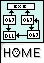

Enhanced Dynamic Linking Library
for MinGW under MS-Windows
tarball md5 (Version @version@)
The md5 on this page are automatically generated whenever the files are ready for upload on
sourceforge.net
.
The tarball md5 sum of version @version@ is:
@md5@
To compute the md5 type the following command:
md5sum <filename>
The contents of the tarball @package@ is:
@files@
You can download the tarball from
https://sourceforge.net/project/showfiles.php?group_id=137288
The older versions of the library tarballs have the following md5 sums:
@allmd5sums@
You can download the
md5sums.txt
file.
This file was last modified on @date@
Copyright (c) 2005-2006
Alexis Wilke